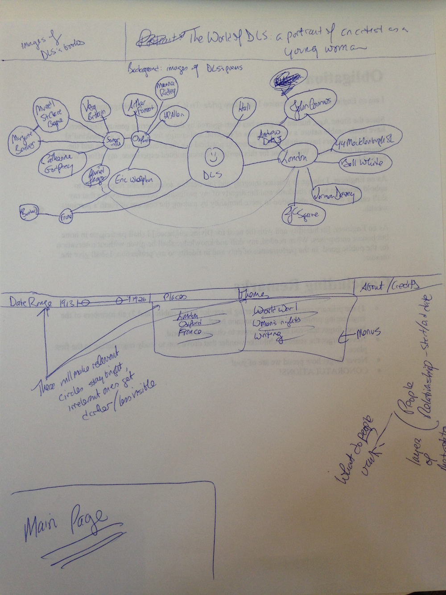
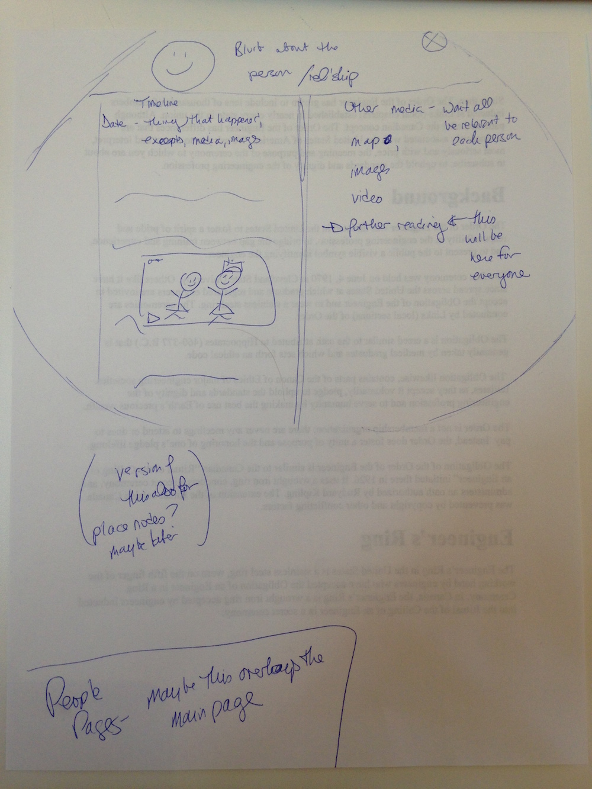

My starting point is Dorothy L. Sayers. Sayers was a novelist, poet, translator, and amateur theologian who lived in the first half of the twentieth century. She's best known for her detective novels featuring the aristocratic sleuth Lord Peter Wimsey. I first enountered Sayers through one of her best-loved novels, Gaudy Night (1935), and I was immediately smitten. In a single densely plotted, atmospheric tale, Sayers touched on many of the key issues of her particular historical moment as well as the universal problem trying to live a good life.
In short order, I'd read all the Wimsey novels and discovered that Sayers has a core of highly devoted fans. I set out to learn more about her life as well. I'm currently researching Sayers' early adulthood, from when she entered Somerville College, Oxford in 1913 until she met her future husband around 1925. During these period, she was one of the first women to be awarded an Oxford degree; she taught in schools in England and France; she experienced World War I from the home front perspective; she published two volumes of poetry; she settled in London's Bloomsbury and wrote the first two Wimsey novels; she had a series of difficult love affairs and had a child; and she began a stint working as an advertising copywriter. Throughout all of this, she maintained a close correspondence with her parents and a tight network of friends, many of whom were also pursuing artistic careers in the context of immediate postwar London.
I'd like to work on a project that captures some aspects of these elements: Sayers' historical context, her fans, and the larger themes that her novels touch upon. As a historian, it's important to me that the project have a strong historical component: in other words, it needs to go beyond the Wimsey novels themselves. As a reader, it's important to me that project answers some need that readers have and helps to build on the sense of excitement inherent to the novels themselves. And as a writer, I'm interested in a project that will help me work through my ideas and sources, as well as, potentially, generating interest from future publishers. A few ideas and themes are below:
I have a range of sources that could be used in this project. In addition to Sayers' published work, I have read her published letters from the period, as well as some unpublished letters. I have also read letters connecting to the life of her lover John Cournos during this period. And I am reading the novels and non-fiction works written by her close associates during this rough era. I have some images, including, for instance, a letter written in Russian to Cournos (who translated from Russian) that I think might have been the inspiration for a similar letter that appears in one of Sayers' later novels. In all of these cases, I will need to be thoughtful about excerpting text or showing just part of an image, because I do not want to infringe on anyone's copyright, and I do not have permission to publish any of these works in their entirety.
One thought about aesthetics: I would like to have circles be an important element of the project's design. For one thing, Sayers regarded her best work as her translation of Dante's poetry--so it would be a nice homage to his "circles" of hell in the Inferno. Then, I'm increasingly interested on the "circles" in which Sayers moved, her circles of friends and acquaintances and so on, which could be visually represented through real circles.
In terms of narrowing the project down: in conversations with fellow students, I've found myself coming back again and again to the issue of context. Sayers' novels stand on their own, but they also can lead the reader into a rich network of topics and people. That's what I'd like the project to do.
Fans of Sayers' detective novels will find, at this website, a portal to discovering her social context at a crucial moment in her life. In its visual and textual content, it will make the case that Sayers grew out of a rich network of relationships that she made in a series of geographical places. Users will be able to explore those relationships and the places and events that were important to them. And they'll be able to discover further resources, both through excerpts and media on the site and lists of further reading. Ideally, the site will also invite users to submit further relevant book or other media recommendations.
This is an image of the main page of the site.
Using the tool bar at the bottom, users will be able to select relationships that connect to certain time periods, themes, or places; the other relationships will fade when those things are selected. They will also be able to click to an about/credits page that will credit the various images and explain the impetus behind the project. Finally, they will be able to click on each individual's circle (and maybe each node), bringing up a page (or maybe a large circle that overlays the main page) devoted to that person (or node).
This page is distantly inspired by Facebook! It will present a brief blurb about the person and their relationship to Sayers. It will present a timeline that incorporates various media, providing aspects of the person's life and especially their relationship with Sayers. It will provide a list of further relevant reading. And there will be space for various media as appropriate: images, maps, etc.